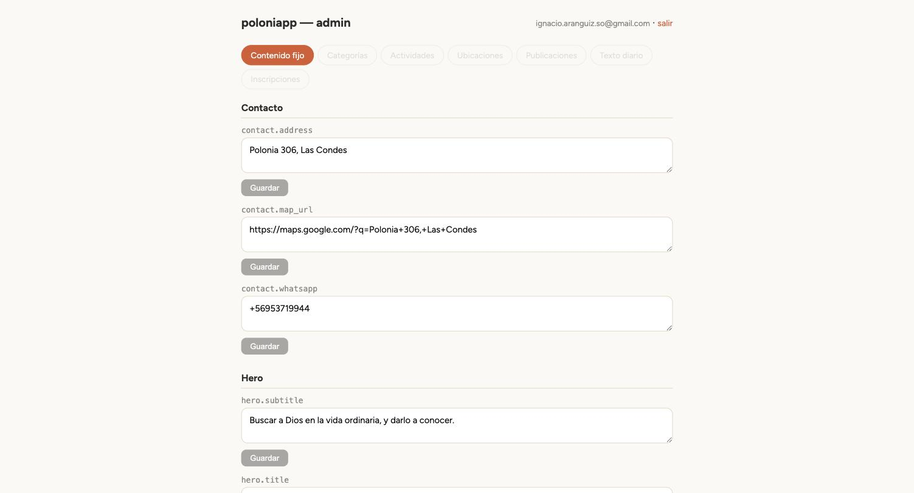
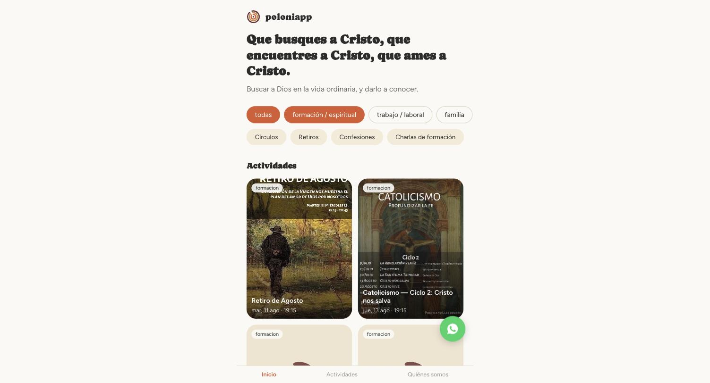
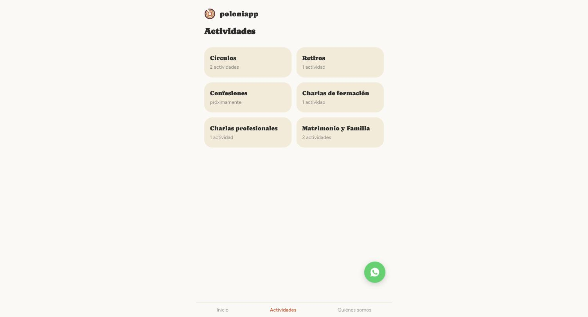

Cómo editar el contenido de poloniapp sin depender de un desarrollador.
Andá a poloniapp.../admin/ e iniciá sesión con el email y contraseña que te dieron. Si no tenés cuenta todavía, pedile a Ignacio que te la cree.
En la pestaña Contenido fijo vas a ver todos los textos del sitio agrupados por sección (Contacto, Hero, Quiénes somos...). Cada campo tiene su propia caja de texto y su propio botón Guardar.

Así se ve la pestaña "Contenido fijo" — cada bloque es una sección del sitio.
El sitio público lee el contenido en vivo desde la misma base de datos — apenas guardás, el cambio ya está. Solo hay que recargar la página del sitio (no hace falta ningún deploy ni pedirle nada a nadie).

La Home del sitio — el título, subtítulo y las categorías que aparecen acá vienen de lo que cargás en el panel.
Los campos que terminan en .imagen (por ahora, la foto de "Quiénes somos") tienen un botón para subir un archivo directo desde tu computador o celular — no hace falta subirla a otro lado ni pegar un link. Elegís el archivo, se sube solo, y aparece una vista previa. Después igual hay que apretar Guardar para confirmar el cambio.

Cada categoría muestra cuántas actividades tiene, o "próximamente" si todavía no hay ninguna cargada.
Arriba a la derecha del panel, click en salir. La sesión también se cierra sola después de un tiempo de inactividad.